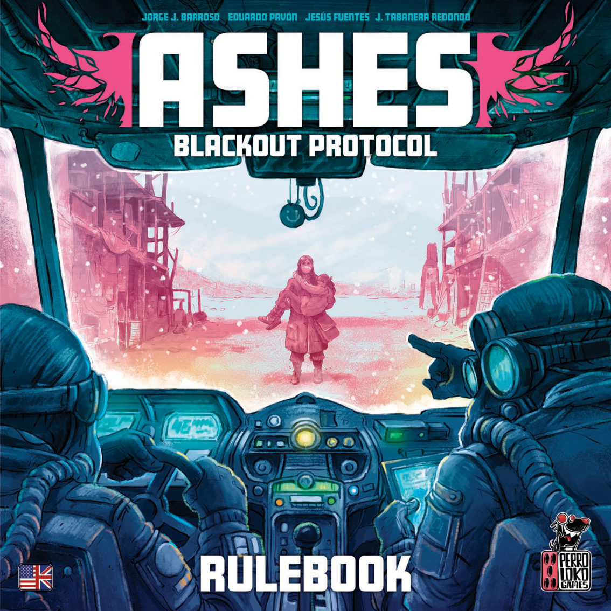
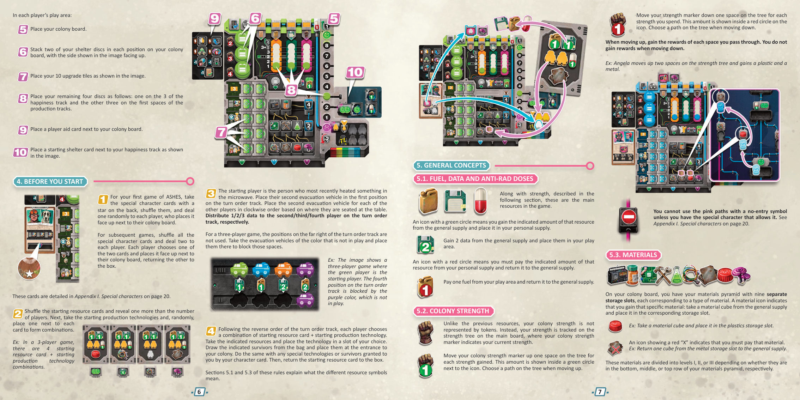
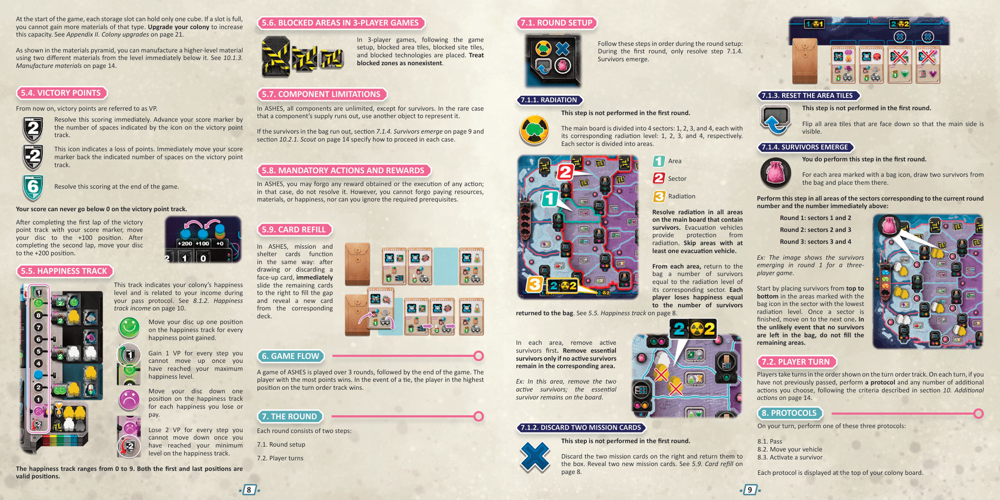
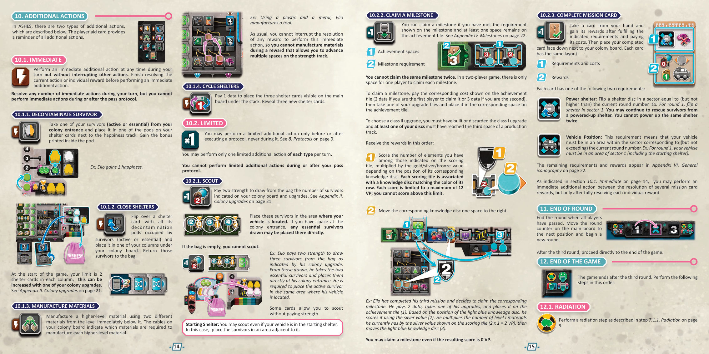
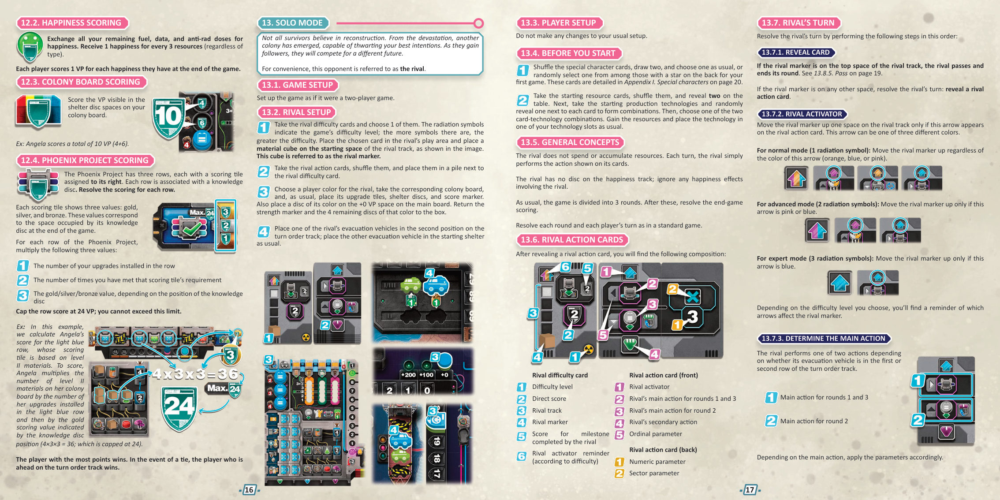
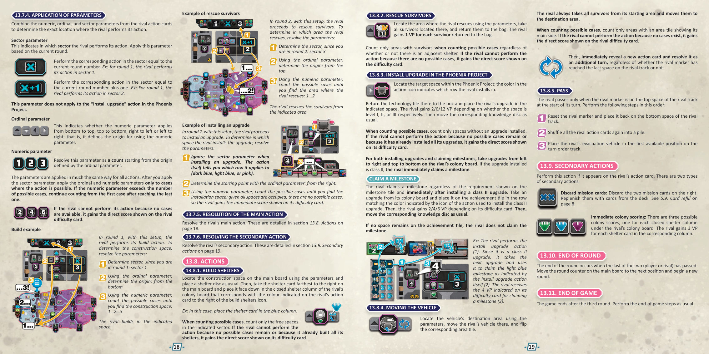
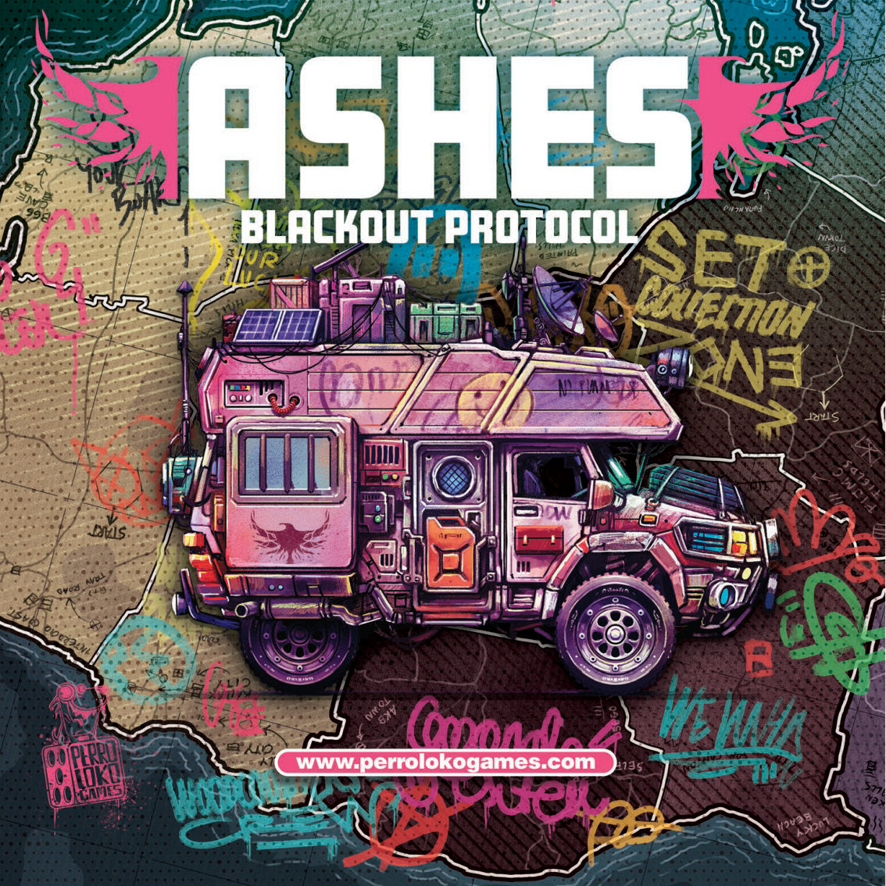

灰烬：停电协议 · 学习版规则
0游戏概要与目标
《灰烬：停电协议》以地下殖民地的重建为主题。玩家营救幸存者、建造避难所、向凤凰计划安装升级，由此累积胜利分。全局共三轮，三轮之后进入终局计分，分数最高者获胜；并列时取回合顺序轨上位置更靠前者。跨页 5跨页 9
| 项目 | 取值 | 依据 |
|---|---|---|
| 人数 | 二至四人；另有单人模式，由对手依行动卡行动 | 跨页 3跨页 9 |
| 轮数 | 三轮，之后直接终局；不设分数门槛，不追加轮次 | 跨页 5跨页 8 |
| 一轮两步 | 轮次设置、玩家轮替 | 跨页 5 |
| 轮次设置四步 | 辐射、弃两张任务卡、重置区域板块、幸存者出现；首轮只执行第四步 | 跨页 5 |
| 三种协议 | 停手、移动撤离车、激活幸存者 | 跨页 5 |
| 四项主要行动 | 建造避难所、营救幸存者、在凤凰计划安装升级、休息 | 跨页 7 |
| 两类额外行动 | 即时额外行动四项、受限额外行动三项 | 跨页 8 |
0.1 页码体例
英文原书为跨页版，13 张页图各由两个单页拼合。页码一律写「跨页 N」，N 与页图文件名中的序号一致；跨页 2 对应原书单页 2–3，跨页 12 对应单页 22–23。第 12 节附完整对照与 13 张页图。跨页 1 为封面，跨页 13 为封底，两者不含规则。跨页 2跨页 12
0.2 触发结构
一个协议构成一个玩家回合的执行主体。停手、移动撤离车、激活幸存者三者在同一回合内选定其一；激活幸存者的生产面板位置四与移动撤离车的区域板块奖励可令玩家执行一项主要行动。额外行动按即时与受限两类各自的时点约束穿插其间。跨页 5跨页 6跨页 7
1初局设置
设置分公共布置、玩家布置、起始组合三步。人数差异集中在主版图与凤凰计划版图的选用面、封锁板块的放置以及成就板块的翻面。跨页 3跨页 4
1.1 公共布置
- 把主版图置于桌面中央，轮次标记放第一格。三人与四人局使用不带辐射带的一面；双人与单人模式使用带辐射带的一面。跨页 3
- 洗匀场址板块，主版图中央每个空位放一块，余者回盒。三人局另在图示空位放封锁场址板块；单人与二、四人局不使用。跨页 3
- 按等级分出区域板块，各叠洗匀，按等级放入对应空位且主面朝上，余者回盒。三人局另在图示空位放封锁区域板块。跨页 3
- 把凤凰计划版图按人数选用的一面朝上置于主版图旁。I 级与 III 级各格随机放计分科技，II 级各格随机放生产技术；三人局在图示空位放封锁科技。跨页 3
- 三个知识圆片置于知识轨起始位置，位置按人数所对应的图标选定，圆片颜色须与其所在行一致。跨页 3
- 三个成就板块放在凤凰计划版图左侧对应位置，并按人数翻面：双人局三块均显示一格，三人局两块显示两格，四人局三块均显示两格。每块旁放一个里程碑，余者回盒。跨页 3
- 洗匀十二块终局计分板块，随机在凤凰计划版图左右两侧各放三块，余者回盒。板块两面分别对应左侧与右侧的用途。跨页 3
- 洗匀三十六张避难所卡成背面朝下牌堆，翻三张正面朝上；洗匀六十四张任务卡成背面朝下牌堆，翻四张正面朝上。跨页 3
- 燃料、数据、抗辐射剂与材料方块置于公共供应；活跃幸存者与关键幸存者放入布袋。跨页 3
1.2 玩家布置
- 分数标记置于胜利分轨第 20 格，一个圆片置于 +0 胜利分格，殖民地强度标记置于图示格，一辆撤离车置于起始避难所，另一辆暂置一旁。跨页 3
- 放好殖民地板；殖民地板每个避难所圆片位叠放两个圆片，按图示面朝上；放好十块升级板块。跨页 4
- 余下四个圆片：一个放幸福轨第 3 格，另三个各放一条生产轨的第一格；玩家提示卡置于殖民地板旁，起始避难所卡置于幸福轨旁。跨页 4
- 首次游戏取背面带星的特殊角色卡洗匀，每人随机发一张；其后各局洗匀全部特殊角色卡，每人发两张并自选一张，另一张回盒。跨页 4
- 洗匀起始资源卡，翻出比玩家人数多一张；随机各配一块起始生产技术，形成组合。跨页 4
- 起始玩家为最近用微波炉加热过物品者。其第二辆撤离车置于回合顺序轨第一格，其余玩家按座位顺时针依次放置；第二、第三、第四位分别取得一、二、三个数据。三人局回合顺序轨最右侧格以未使用颜色的撤离车封锁。跨页 4
- 按回合顺序轨的逆序，各人选一组起始资源卡与起始生产技术的组合：取得卡面资源，把科技放入自选槽位，自袋中抽出指定幸存者置于殖民地入口；特殊角色所给予的特殊科技与幸存者同样处理；起始资源卡回盒。跨页 4
2版图与组件速认
按使用先后认识版图：先分主版图与凤凰计划版图，再分殖民地板各区，最后认清材料与幸存者的存放位。跨页 2跨页 3跨页 4
2.1 配件
| 类别 | 内容 | 依据 |
|---|---|---|
| 版图与板块 | 主版图 1 块、场址板块 12 块、封锁场址板块 5 块、区域板块 29 块分四级、封锁区域板块 6 块、凤凰计划版图 1 块、轮次标记 1 个 | 跨页 2 |
| 资源与幸存者 | 抗辐射剂 28 个、数据 24 个、燃料 32 个、材料方块 50 个、活跃幸存者 50 个、关键幸存者 25 个、布袋 1 个 | 跨页 2 |
| 卡牌 | 任务卡 64 张、避难所卡 36 张、起始资源卡 5 张、特殊角色卡 12 张、对手行动卡 12 张、对手难度卡 3 张 | 跨页 2 |
| 科技与计分 | 知识圆片 3 个、终局计分板块 12 块、成就板块 3 块、里程碑 6 块、生产技术 14 块、计分科技 12 块、封锁科技 6 块、起始生产技术 6 块、特殊科技 6 块 | 跨页 2 |
| 每色玩家配件 | 殖民地板 1 块、避难所圆片 6 个、升级板块 10 块、圆片 5 个、撤离车 2 辆、分数标记 1 个、殖民地强度标记 1 个、起始避难所卡 1 张、玩家提示卡 1 张 | 跨页 2 |
2.2 主版图
| 位置 | 结构 | 规则作用 |
|---|---|---|
| 四个区段 | 编号 1、2、3、4，辐射等级依次为 1、2、3、4 | 辐射结算按区段等级取数量；幸存者出现按轮次覆盖相邻两个区段 |
| 区域 | 每区段分若干区域，相邻区域共享一段边界线 | 撤离车逐区域移动；区域板块提供奖励 |
| 区域板块 | 主面与次面两面，按四级分区 | 激活时取可见面奖励；主面朝上则激活后翻面 |
| 场址板块 | 印有建造格，部分建造格底部带蓝灯 | 建造避难所的落点；带蓝灯者为地标建造格 |
| 展示区 | 四张任务卡、三张避难所卡 | 取走或弃掉后立即右移补位并翻出新卡 |
| 回合顺序轨 | 上下两行；上行用于第 1、3 轮，下行用于第 2 轮 | 停手时为下一轮选位并取得该格奖励 |
2.3 凤凰计划版图
版图自左向右分为 I、II、III 三级，另有三条横行，每行对应一个知识圆片且行末置一块计分板块。计分板块印金、银、铜三值，取值由该行知识圆片在知识轨上的位置决定。版图左侧放成就板块与里程碑。I 级与 III 级格位放计分科技，II 级格位放生产技术。跨页 3跨页 9
2.4 殖民地板
| 区域 | 结构 | 规则作用 |
|---|---|---|
| 材料金字塔 | 九个独立存储格，按上下三排分 I、II、III 级 | 每格存一种材料；开局每格至多一个方块 |
| 生产面板 | 四个位置与三条生产轨 | 激活幸存者时按位置取卡或生产；生产量按对应轨圆片高度 |
| 激活区与槽位 | 四个激活区，各对应一个科技槽位与生产面板的一个位置 | 同一轮同一激活区不可重复选用 |
| 五个计分区 | 三个避难所列、一个材料区、一个幸存者区 | 停手时按升级允许的上限选区结算 |
| 幸福轨与避难所卡位 | 幸福轨 0 至 9，旁置三张避难所卡 | 净化舱收入与殖民地计分的载体 |
| 殖民地入口 | 四个空位，升级后可增至五个 | 每名幸存者占一格，营救与回收的上限 |
3核心引擎
全局由三轮串接。每轮先完成四步轮次设置，再由玩家轮流执行协议与额外行动，全员停手后推进轮次标记；第三轮结束直接进入终局计分。跨页 5跨页 8
3.1 玩家回合内的顺序
- 按回合顺序轨轮到某位玩家；此前已停手者不再行动。跨页 5
- 执行一次协议，随后可执行任意数量额外行动；即时额外行动须待当前行动或单项奖励结算完毕再插入，受限额外行动只能在协议之前或之后执行。跨页 5跨页 8
- 停手协议是本轮最后一次协议，其四步按固定顺序结算，之后本轮不得再执行主要行动与额外行动。跨页 6跨页 8
- 全员停手后轮次结束，轮次标记前进一格并开始新一轮。跨页 8
3.2 两类行动的关系
主要行动由激活幸存者的生产面板位置四或区域板块奖励触发，每次执行其中一项；额外行动不由协议触发，按自身时点约束自行插入。受限额外行动每种每回合至多一次，即时额外行动次数不限。跨页 6跨页 7跨页 8
4一轮的结构
一轮分轮次设置与玩家轮替两步。轮次设置按四步顺序执行，首轮只执行第四步；玩家轮替按回合顺序轨逐个进行，全员停手后结束本轮。跨页 5跨页 8
4.1 辐射
- 对主版图上所有含幸存者的区域结算辐射；至少有一辆撤离车的区域提供防护，跳过该区域。跨页 5
- 每区域把数量等于其所在区段辐射等级的幸存者退回布袋；每名玩家失去的幸福等于退回袋中的幸存者数量。跨页 5
- 每区域先移除活跃幸存者；活跃幸存者全部移除后仍有余额，才移除关键幸存者。跨页 5
4.2 弃两张任务卡与重置区域板块
把展示区右侧两张任务卡弃置回盒并翻出两张新卡；把主版图上所有面朝下的区域板块翻至主面可见。两步在首轮均不执行。跨页 5
4.3 幸存者出现
每个标有布袋图标的区域自袋中抽两名幸存者置入。该步覆盖当前轮次编号及其上一编号的两个区段：第 1 轮为区段 1 与 2，第 2 轮为区段 2 与 3，第 3 轮为区段 3 与 4。放置自辐射等级最低的区段起，在该区段内自上而下逐格进行，一个区段完成后转入下一区段；袋中无幸存者时，其余区域不再放置。首轮只执行本步。跨页 5
4.4 玩家轮替与轮次结束
| 环节 | 执行口径 | 依据 |
|---|---|---|
| 行动顺序 | 按回合顺序轨；上行用于第 1、3 轮，下行用于第 2 轮 | 跨页 6 |
| 单次行动 | 此前未停手者执行一个协议与任意数量额外行动 | 跨页 5 |
| 停手之后 | 本轮不再执行任何主要行动或额外行动 | 跨页 6跨页 8 |
| 轮次结束 | 全员停手后轮次标记前进一格；第三轮之后直接终局 | 跨页 8跨页 9 |
5三种协议
三种协议印在殖民地板顶部，每次行动选定其一。停手以四步收束本轮行动，移动撤离车把车与幸存者带到新区域并激活区域板块，激活幸存者把入口的活跃幸存者转为槽位奖励与生产。跨页 5跨页 6
5.1 停手
停手是本轮最后一次协议。把玩家提示卡翻到停手面，按四步顺序结算后翻回；此后本轮不得再执行主要行动与额外行动。跨页 6
- 回收幸存者：为每名希望自激活区回收的幸存者支付一个抗辐射剂，把回收者置于殖民地入口；未回收者退回布袋，每名失去一点幸福。殖民地入口无空位而须弃掉已在入口的幸存者时，每弃一名失去一点幸福。跨页 6
- 幸福轨收入：避难所卡上带收入标记的净化舱须放有幸存者，且其等级不高于幸福轨圆片位置，方可取得该舱收入。收入自下而上结算；一项「一名活跃幸存者」的收入始终可取，先结算该项，再按圆片新位置结算其余收入。跨页 6
- 殖民地计分：在殖民地板与升级允许的上限内选择计分区，初始上限为两个。三个避难所列区每区按所选列中每张已封闭避难所卡得三分；材料区按每个 II 级材料得二分、每个 III 级材料得四分并受上限约束；幸存者区按入口每名活跃幸存者得零、一或二分，取值随升级而定。跨页 6
- 回合顺序：为下一轮在回合顺序轨选一个新位置并取得该格奖励，不得占据已被其他玩家占据的格。上行用于第 1、3 轮，下行用于第 2 轮。跨页 6
5.2 移动撤离车
- 支付两个燃料，按殖民地板与升级所示的格数上限移动撤离车，并激活目的地区域板块。一个区域可同时容纳两辆或更多撤离车。跨页 6
- 移动一格指自一个区域进入相邻区域；相邻区域共享一段边界线，红线不可通行；移动可结束于起点格。离开起始避难所计为一次移动。跨页 6
- 载量上限按版面与升级所示，初始为两名，升级后可至三或四名。移动途中每格可上落幸存者，任何时刻不得超出载量。跨页 6跨页 11
- 到达后激活区域板块，取可见面所示奖励：获得材料、取得一张任务卡、立即触发殖民地计分，或执行一项主要行动。主面朝上的板块激活后翻至次面；次面朝上则不翻。跨页 6
5.3 激活幸存者
- 殖民地入口须有一名活跃幸存者。取该幸存者置于自选激活区；同一轮同一激活区不可重复选用。开局每轮限三次，升级后可增至四次。跨页 6跨页 11
- 激活槽位：自上而下取得该槽位全部科技板块所示奖励。跨页 6
- 生产面板按幸存者所在位置结算：位置一自四张可见任务卡取一张加入手牌并立即补充展示；位置二、三、四分别生产燃料、数据、强度，产量按对应生产轨圆片高度；圆片位于该轨最高位时另得二分。跨页 7
- 执行一项自选主要行动，四项主要行动见第 6 节。跨页 7
6四项主要行动
四项主要行动由激活幸存者的生产面板位置四、区域板块奖励或任务卡效果触发，每次执行其中一项。建造避难所改动主版图与生产轨，营救幸存者补充殖民地入口，安装升级把材料与数据转为科技与知识轨推进，休息补充幸福与燃料。跨页 7
6.1 建造避难所
- 避难所圆片按殖民地板自上而下的顺序建造。原书列出前两枚各支付两点强度、后两枚各支付四点强度；配件表为六枚圆片且每格叠两枚，第三组两枚的计价原文未载，以实体版图印值为准。跨页 7
- 支付圆片旁所示强度，把圆片放到任一场址板块的空闲建造格；已有避难所圆片的建造格不可再建。跨页 7
- 取得该建造格所示奖励。所有建造格都带「取一张避难所卡」图标：自三张可见避难所卡取一张置于幸福轨旁，立即补充展示。跨页 7
- 避难所卡在幸福轨旁自下而上放置，仅三个位置。无空位时可替换最上面一张，被替换卡放回牌堆底部；该卡上指派的幸存者每人失去一点幸福并退回布袋。跨页 7
- 每个建造格附带生产轨修正：每有一个修正，把对应生产轨圆片上移一格；因该轨已满而无法上移的每格得二分。跨页 7
- 地标建造格按常规建造，其地标属性只在结算计分板块时起作用。跨页 7
6.2 营救幸存者
自与本人任一避难所相邻的单一区域营救幸存者，置于殖民地入口；所有幸存者须来自同一区域，活跃与关键幸存者均可营救，且不得超出入口空位。殖民地入口初始四格，升级后可增至五格。起始避难所同样可作为营救的相邻依据。跨页 7
6.3 在凤凰计划安装升级
- 支付费用：I 级支付一个 I 级材料与一、二或三个数据；II 级支付两个 II 级材料与一、二或三个数据；III 级支付两个 III 级材料与二、三或四个数据。数据数额按该等级上由全体玩家安装的第 1、第 2、第三个及其后各升级判定。跨页 7
- 取科技：把所选格上的生产技术或计分科技指派到一个槽位。开局每槽至多叠两块科技，升级可提高上限；各槽均无空位时弃掉所得科技，或以其替换某槽最上面一块。跨页 7
- 放升级板块：取一块本人升级板块置于所选格。选择 II 级升级须已建造或弃掉 I 级升级，且至少一个圆片到达某条生产轨第三格。跨页 7
- 取得奖励：I、II、III 级分别得二、六、十二分，并把该行对应的知识圆片右移一格。跨页 7
6.4 休息
把幸福轨圆片上移两格，并取得一个燃料。跨页 7
7两类额外行动
即时额外行动可在回合内任意时刻插入，次数不限；受限额外行动只能在协议之前或之后执行，每种每回合至多一次。两类行动在停手协议进行中或之后均不可执行。跨页 8
7.1 四项即时额外行动
| 行动 | 规则作用 | 依据 |
|---|---|---|
| 净化幸存者 | 自殖民地入口取一名活跃或关键幸存者，放入幸福轨旁某张避难所卡的一个净化舱，取得该舱内印制的奖励 | 跨页 8 |
| 封闭避难所 | 把一张所有净化舱均已占满的避难所卡翻面，置于殖民地板下方某一列；卡上幸存者退回布袋。开局每列上限两张 | 跨页 8 |
| 制造材料 | 用紧下一级的两种不同材料制造一个高一级材料，组合按殖民地板上的连线判定。不得在一项奖励的结算途中插入 | 跨页 4跨页 8 |
| 轮换避难所卡 | 支付一个数据，把展示区三张避难所卡置于牌堆底部并翻出三张新卡 | 跨页 8 |
7.2 三项受限额外行动
- 侦察：支付两点强度，自袋中抽出殖民地板与升级所示数量的幸存者，置于撤离车所在区域；殖民地入口有空位时，抽到的关键幸存者可直接置于入口。袋空则不可侦察；部分卡牌允许免付强度侦察。撤离车在起始避难所时仍可侦察，幸存者改放与其相邻的区域。跨页 8
- 达成里程碑：满足里程碑条件且成就板块尚有空位时，第一个达成的玩家支付两个数据、第二个支付三个数据，取一块升级板块置于成就板块对应格。选择 II 级升级须已建造或弃掉 I 级升级，且至少一个圆片到达某条生产轨第三格。奖励按两步结算：先按计分板块所示元素数量乘以金、银或铜值计分，每项计分上限十二分；再把对应知识圆片右移一格。计分结果为零分仍可达成。同一里程碑不可达成两次，双人局每个里程碑仅容一名玩家。跨页 8跨页 12
- 完成任务卡：自手牌取一张卡，满足所示要求并支付费用后取得奖励，卡背面朝下置于殖民地板旁。任务卡有两类位置要求：加强避难所指翻面一枚所在区段编号不高于当前轮次的避难所圆片，之后仍可自该避难所营救，同一避难所不可加强两次；撤离车位置指撤离车须位于区段编号不高于当前轮次的区域，起始避难所计入其内。跨页 8
7.3 六项里程碑条件
| 条件 | 口径 |
|---|---|
| 幸福轨 | 圆片到达第 8 格 |
| 凤凰计划 | 至少安装两块升级 |
| 避难所 | 至少建造三个避难所圆片，是否加强均计入 |
| 任务卡 | 至少完成三张任务卡 |
| 已封闭避难所卡 | 各列中至少有两张 |
| 材料 | 至少拥有三个 II 级材料 |
8贯穿全局的系统
跨阶段生效的结构分列于后：三类资源与强度、材料金字塔、胜利分与幸福轨、卡补充与组件上限、可放弃范围的边界、殖民地升级五条轨道、六种计分科技。七组结构均不改变一轮的两步骨架。跨页 4跨页 5跨页 11跨页 12
8.1 资源与强度
| 对象 | 取得 | 支付 | 依据 |
|---|---|---|---|
| 燃料、数据、抗辐射剂 | 绿圈图标：自公共供应取得所示数量，放入个人供应 | 红圈图标：自个人供应支付所示数量，退回公共供应 | 跨页 4 |
| 殖民地强度 | 强度树标记每得一点上移一格，上行时选路径并取得途经每格奖励 | 每支付一点下移一格，下行时选路径且不取得奖励 | 跨页 4 |
| 粉色禁止通行路径 | 仅拥有对应特殊角色方可在上行或下行时使用 | 不适用 | 跨页 4跨页 11 |
8.2 材料金字塔
- 九个独立存储格分 I、II、III 三排，每格对应一种材料；取得材料时把方块自公共供应放入对应格，带红色叉号的图标表示支付该材料。跨页 4
- 开局每格至多一个方块；格位已满时不可再取得同种材料，容量可经殖民地升级提高。跨页 5跨页 11
- 用紧下一级的两种不同材料制造一个高一级材料，组合按殖民地板上的连线判定。跨页 5
8.3 胜利分与幸福轨
| 项目 | 规则口径 | 依据 |
|---|---|---|
| 立即计分与扣分 | 按图标所示格数在胜利分轨前进或后退，即时结算 | 跨页 5 |
| 终局计分图标 | 只在游戏结束时结算 | 跨页 5 |
| 分数下限 | 胜利分轨上的分数不低于零 | 跨页 5 |
| 跨圈 | 跑完第一圈把圆片移至 +100 位，跑完第二圈移至 +200 位 | 跨页 5 |
| 幸福轨范围 | 零至九，首尾两格均为有效位置 | 跨页 5 |
| 幸福上限溢出 | 已达最高位后每无法上移一步得一分 | 跨页 5 |
| 幸福下限溢出 | 已达最低位后每无法下移一步失二分 | 跨页 5 |
8.4 卡补充、组件上限与可放弃范围
- 任务卡与避难所卡按同一口径补充：取走或弃掉一张正面朝上的卡后，其余卡立即右移补位，自对应牌堆翻出一张新卡。跨页 5
- 除幸存者外全部组件不限量；某项公共供应耗尽时以其他物件代替。布袋中幸存者耗尽时，幸存者出现的其余区域不再放置，侦察不可执行。跨页 5跨页 8
- 可放弃任何已取得的奖励或任何行动的执行，结算时略去该项；不得放弃支付资源、材料或幸福，也不得忽略所需的前置条件。跨页 5
8.5 殖民地升级五条轨道
| 类别 | 初始 | I 级 | II 级 |
|---|---|---|---|
| 激活区 | 每轮可选用四个激活区中的三个 | 殖民地入口增至五格 | 每轮可选用全部四个激活区 |
| 科技与计分 | 每槽至多叠两块科技或已封闭避难所卡，可结算两个计分区 | 堆叠上限仍为两块，可结算三个计分区 | 堆叠上限增至三块，可结算四个计分区 |
| 侦察与幸存者计分 | 侦察抽两名，入口每名幸存者零分 | 侦察抽三名，入口每名幸存者一分 | 侦察抽四名，入口每名幸存者二分 |
| 材料 | 每格至多一个方块，材料计分上限二分 | 每格至多两个方块，材料计分上限六分 | 每格至多三个方块，材料计分上限十二分 |
| 撤离车 | 移动至多两格、载量至多两名，不可进入区段 IV | 移动至多三格、载量至多三名，不可进入区段 IV | 移动至多四格、载量至多四名，可进入区段 IV |
8.6 六种计分科技
| 科技 | 每次激活对应槽位时的结算 |
|---|---|
| 其一 | 各列中每张已封闭避难所卡得一分 |
| 其二 | 每处已建造的避难所得一分，起始避难所不计 |
| 其三 | 每张已完成的任务卡得一分 |
| 其四 | 存储格中每个 II 级材料得一分 |
| 其五 | 凤凰计划中每块已安装的升级得一分 |
| 其六 | 获得二分 |
9终局与计分链路
第三轮结束后直接进入终局，按辐射、幸福计分、殖民地板计分、凤凰计划计分四步顺序结算；分数最高者获胜，并列时取回合顺序轨上位置更靠前者。跨页 8跨页 9
9.1 四步结算
- 按第 4 节所述执行一次辐射步骤。跨页 9
- 把剩余的全部燃料、数据与抗辐射剂换成幸福，每三个资源换一点幸福，资源种类不限；终局每有一点幸福得一分。跨页 9
- 结算殖民地板上避难所圆片格内可见的胜利分。跨页 9
- 逐行结算凤凰计划：把该行已安装的升级数量、满足该行计分板块要求的次数、以及知识圆片位置所对应的金、银或铜值三者相乘，每行上限二十四分。跨页 9
9.2 计分板块的判定对象
| 对象 | 口径 |
|---|---|
| 指定颜色的生产修正 | 放有本人避难所圆片的建造格上该颜色修正的总数，起始避难所对应的格计入 |
| 指定等级的材料 | 存储格中该等级材料的数量 |
| II 级升级 | 已安装或已弃掉的 II 级升级数量 |
| 已封闭避难所卡 | 各列中已封闭避难所卡的数量 |
| 已完成任务卡 | 背面朝下置于殖民地板旁的任务卡数量 |
| 已安装升级 | 凤凰计划中已安装的升级数量 |
| 彼此相连的避难所 | 由主版图两区域之间的边界线相连者视为相连，是否加强均计入，起始避难所不计 |
| 地标建造格上的避难所 | 建在底部带蓝灯建造格上的避难所，是否加强均计入 |
10常见误读与示例拆解
下列条目按规则口径逐条对照，页码指向英文跨页版。原书未列或存在歧义之处只记录，不代填；中文版中的译者注属译者判断，不列入规则口径。跨页 4跨页 5
10.1 常见误读逐条对照
| 误读 | 规则口径 | 依据 |
|---|---|---|
| 全局共四轮 | 三轮之后直接终局 | 跨页 5 |
| 首轮也执行辐射 | 首轮只执行幸存者出现，其余三步跳过 | 跨页 5 |
| 首轮不放置幸存者 | 首轮唯一执行的正是幸存者出现 | 跨页 5 |
| 有撤离车的区域仍结算辐射 | 至少一辆撤离车即跳过该区域 | 跨页 5 |
| 辐射先移除关键幸存者 | 先移除活跃幸存者，无活跃时才移除关键幸存者 | 跨页 5 |
| 幸存者出现覆盖全部四个区段 | 第 1、2、3 轮依次为区段 1+2、2+3、3+4 | 跨页 5 |
| 袋空时以其他组件代替幸存者 | 袋空时剩余区域不再放置 | 跨页 5 |
| 停手后仍可执行即时额外行动 | 停手协议进行中或之后两类额外行动均不可执行 | 跨页 6跨页 8 |
| 停手四步顺序可自行调整 | 按回收幸存者、幸福轨收入、殖民地计分、回合顺序依次结算 | 跨页 6 |
| 未回收的幸存者留在激活区 | 退回布袋，每名失去一点幸福 | 跨页 6 |
| 幸福轨收入自上而下结算 | 自下而上结算，先取一名活跃幸存者，再按圆片新位置结算其余 | 跨页 6 |
| 殖民地计分五个区全部结算 | 按殖民地板与升级允许的上限选区，初始为两个 | 跨页 6 |
| 材料计分没有上限 | 材料计分有上限，可经殖民地升级提高 | 跨页 6跨页 11 |
| 回合顺序轨两行可任选 | 上行用于第 1、3 轮，下行用于第 2 轮 | 跨页 6 |
| 可占据已被他人占据的顺序轨格 | 不可占据 | 跨页 6 |
| 撤离车可穿越红线 | 红线不可通行 | 跨页 6 |
| 移动不可结束于起点 | 可结束于起点格 | 跨页 6 |
| 载量只在到达时判定 | 移动途中任何时刻均不得超出载量 | 跨页 6 |
| 主面朝上的区域板块激活后不翻面 | 主面激活后翻至次面；次面朝上则不翻 | 跨页 6 |
| 离开起始避难所不计移动 | 计为一次移动 | 跨页 6 |
| 关键幸存者可用于激活协议 | 须为活跃幸存者 | 跨页 6 |
| 同一轮可重复选用同一激活区 | 同一轮不可重复 | 跨页 6 |
| 生产面板位置一也生产资源 | 位置一取自四张可见任务卡并补充展示，位置二至四才生产 | 跨页 7 |
| 生产轨圆片到顶无额外奖励 | 圆片位于最高位时另得二分 | 跨页 7 |
| 六枚避难所圆片的价格全部列出 | 原书只列前两枚与后两枚的价格，第三组两枚计价未载 | 跨页 7 |
| 已建避难所的建造格可再建 | 只可置于空闲建造格 | 跨页 7 |
| 营救可自多个区域取幸存者 | 全部幸存者须来自同一相邻区域 | 跨页 7 |
| 营救不受殖民地入口空位限制 | 不得超出入口空位，初始四格 | 跨页 7 |
| 凤凰计划的数据费用固定 | 按该等级上全体玩家安装的第 1、第 2、第三个及其后各升级递增 | 跨页 7 |
| II 级升级无前置条件 | 须已建造或弃掉 I 级升级，且某生产轨圆片到达第三格 | 跨页 7 |
| 安装升级只在终局计分 | 安装时即得二、六或十二分并推进知识圆片 | 跨页 7 |
| 即时额外行动可打断奖励结算 | 须待当前行动或单项奖励结算完毕 | 跨页 8 |
| 受限额外行动可在协议中执行 | 只能在协议之前或之后 | 跨页 8 |
| 里程碑计分为零分则不可达成 | 零分仍可达成 | 跨页 8 |
| 任务卡的区段要求可高于当前轮次 | 区段编号不得高于当前轮次 | 跨页 8 |
| 可放弃支付费用以保留资源 | 奖励与行动可放弃，支付与前置条件不得放弃 | 跨页 5 |
| 终局不执行辐射 | 终局第一步按轮次设置的辐射执行一次 | 跨页 9 |
| 凤凰计划每行计分无上限 | 每行上限二十四分 | 跨页 9 |
| 平局按剩余资源裁定 | 按回合顺序轨位置裁定 | 跨页 5跨页 9 |
| 跨页编号等同原书单页编号 | 一张跨页图含两个单页，跨页 N 不可按单页 N 查中文版 | 跨页 2跨页 12 |
| 中文版译者注属原书规则 | 属译者判断，以实体配件与英文原书为准 | 跨页 11 |
10.2 原书示例拆解
| 示例 | 步骤 | 结果 | 依据 |
|---|---|---|---|
| 停手收入 | Elio 自下而上结算幸福轨收入：先取一名活跃幸存者置于入口，再把圆片上移两格幸福 | 按圆片新位置取得另一项收入，把一个材料方块放入电路板存储格 | 跨页 6 |
| 殖民地计分 | Elio 可结算两个计分区，选择两个已封闭避难所列 | 得六分与三分，共九分；材料区虽有四分材料，该区当时上限为二分，未计入所选计分区 | 跨页 6 |
| 移动撤离车 | Angela 经升级可移动至多三格、载量至多三名；自起点带两名幸存者移动一格后留下，再取三名移至目的地 | 到达后激活目的地区域板块，途中任何时刻未超出载量 | 跨页 6 |
| 安装升级 | Angela 支付一个数据与一个 I 级材料，在 I 级安装该等级第一个升级，取走计分科技并放入自选槽位，再放升级板块 | 得二分，对应知识圆片右移一格 | 跨页 7 |
| 终局相乘 | Angela 在浅蓝行按 II 级材料计分：材料数四、该行已安装升级数三、知识圆片对应金值三 | 四乘三乘三得三十六，按每行上限截为二十四分 | 跨页 9 |
11人数变体与单人模式
二至四人局的规则相同，差异集中在设置；单人模式按双人局设置，另加入由行动卡驱动的对手。跨页 3跨页 9
11.1 人数差异
| 项目 | 二人局 | 三人局 | 四人局 |
|---|---|---|---|
| 主版图与凤凰计划版图 | 带辐射带的一面 | 不带辐射带的一面 | 不带辐射带的一面 |
| 封锁场址、区域板块与科技 | 不放置 | 按图示空位放置，视为不存在 | 不放置 |
| 成就板块翻面 | 三块均显示一格 | 两块显示两格 | 三块均显示两格 |
| 起始资源卡组合 | 三组 | 四组 | 五组 |
| 回合顺序轨 | 正常使用前两格 | 最右侧格以未使用颜色撤离车封锁 | 四格全部使用 |
| 里程碑达成位 | 每个里程碑仅容一名玩家 | 按成就板块所示格数 | 按成就板块所示格数 |
11.2 对手设置
- 按双人局完成全部设置，玩家自身设置不作改动。跨页 9
- 自三张对手难度卡选一张，辐射符号越多难度越高；把卡置于对手区，并把一个材料方块放在对手轨起始格作为对手标记。跨页 9
- 洗匀十二张对手行动卡成牌堆置于难度卡旁；为对手选一个颜色，取其殖民地板并按常规放好升级板块、避难所圆片与分数标记，另放一个该色圆片于 +0 胜利分格；强度标记与余下四个圆片回盒。跨页 9
- 对手一辆撤离车置于回合顺序轨第二格，另一辆置于起始避难所。跨页 9
- 玩家按常规选取特殊角色：洗匀特殊角色卡抽二选一，首局可自背面带星者中随机取一张。洗匀起始资源卡翻出两张，各配一块起始生产技术，玩家选其中一组。跨页 9
11.3 对手的回合
- 对手标记位于对手轨顶格时，对手停手：标记移至底格、重洗全部行动卡、撤离车置于回合顺序轨首个空位。跨页 10
- 标记位于其余格时翻开一张对手行动卡；仅当卡面出现箭头且颜色符合难度档位时，把标记上移一格。普通档任意颜色均上移，进阶档仅粉或蓝，专家档仅蓝。跨页 9跨页 10
- 按撤离车位于回合顺序轨第一行或第二行，判定本回合采用第 1、3 轮的主行动还是第 2 轮的主行动。跨页 9
- 按区段、序数、数值三个参数定位行动目标：区段参数按当前轮次或轮次加一，序数参数定起点方向，数值参数自起点计数；数值超出可行情形数时自第一个情形续数。安装升级时不套用区段参数。跨页 10
- 执行主行动与卡面所示次要行动；无可执行情形时，对手取得难度卡所示的直接分数。部分行动卡另要求立即翻新一张卡作为额外回合。跨页 10
11.4 对手行动与终局计分
| 项目 | 口径 | 依据 |
|---|---|---|
| 资源与幸福 | 对手不花费也不累积资源，每回合只执行卡面行动；对手无幸福轨圆片，涉及对手的幸福效果一律忽略 | 跨页 9 |
| 建造避难所 | 在参数定位的空闲建造格放一枚避难所圆片，取展示区最右侧避难所卡背面朝下放入行动卡所示颜色的已封闭避难所列；只计该区段空闲格 | 跨页 10 |
| 营救幸存者 | 取目标区域全部幸存者退回布袋，每名得一分；只计含幸存者的区域 | 跨页 10 |
| 安装升级 | 把目标格上的科技回盒并放入对手升级，按等级得二、六或十二分并推进对应知识圆片；只计未安装升级的格 | 跨页 10 |
| 移动撤离车 | 把撤离车移至目标区域并翻面该区域板块，起始区域全部幸存者随行；只计主面朝上的区域板块 | 跨页 10 |
| 达成里程碑 | 安装 II 级升级后立即达成，无视里程碑条件，按行动卡颜色取对应行的成就板块格，并按难度得二、四或六分；成就板块无空位时不达成 | 跨页 10 |
| 次要行动 | 弃展示区右侧两张任务卡并补充；或按对手三列中每列已封闭避难所卡数，每卡得三分 | 跨页 10 |
| 终局计分 | 不计幸福分；计殖民地板避难所圆片格内分数；翻难度卡按知识圆片位置计每个已安装升级的分，普通档铜银金为二、四、六分，进阶档四、六、十分，专家档六、八、十二分 | 跨页 11 |
11.5 版本差异记录
| 条目 | 英文原书 | 已上线中文版 | 处理 |
|---|---|---|---|
| 页码体例 | 13 张跨页图，各含两个单页 | 图注按「原书第 2–3 页」等单页区间标注 | 页码统一写「跨页 N」，第 12 节附两种编号对照 |
| 六枚避难所圆片的价格 | 只列前两枚与后两枚，共四项 | 照原文译出并附译者注 | 只记录原文缺项，第三组计价以实体版图印值为准 |
| 特殊角色卡数量 | 配件表 12 张，附录 I 按卡面顺序列出 13 条效果 | 附译者注推定多出一条为同卡第二段能力 | 按配件表记十二张，不采纳推定 |
| 其余歧义 | 辐射扣幸福的结算粒度、净化舱等级定义、里程碑计分板块元素范围、参数续数起点 | 各附译者注 | 视为译者判断，只列原文所述条件，不反推规则 |
12速查表与页码索引
12.1 一个回合速查
| 环节 | 执行内容 | 禁止 |
|---|---|---|
| 轮次设置 | 辐射、弃两张任务卡、重置区域板块、幸存者出现；首轮只做第四步 | 首轮执行辐射 |
| 协议 | 停手、移动撤离车、激活幸存者三者选定其一 | 同一行动执行两个协议 |
| 额外行动 | 即时行动结算完毕即可插入；受限行动只在协议前后，每种每回合一次 | 停手协议进行中或之后执行 |
| 主要行动 | 建造避难所、营救幸存者、安装升级、休息，按触发来源执行一项 | 无触发来源时自行执行 |
| 停手四步 | 回收幸存者、幸福轨收入、殖民地计分、回合顺序 | 停手后继续执行行动 |
| 轮次结束 | 全员停手后推进轮次标记；第三轮后终局 | 第三轮后追加第四轮 |
| 终局四步 | 辐射、幸福计分、殖民地板计分、凤凰计划计分 | 跳过终局辐射 |
12.2 中英术语对照
| 中文 | 英文 | 口径 |
|---|---|---|
| 轮次设置 | Round setup | 每轮第一步，含四个子步骤 |
| 协议 | Protocol | 停手、移动撤离车、激活幸存者三者 |
| 停手 | Pass | 四步固定顺序，本轮最后一次协议 |
| 撤离车 | Evacuation vehicle | 主版图上移动的载具，兼作回合顺序轨标记 |
| 激活区 | Activation zone | 四个，各对应一个科技槽位与生产面板位置 |
| 净化舱 | Decontamination pod | 避难所卡上容纳幸存者的格位 |
| 材料金字塔 | Materials pyramid | 九个存储格，分 I、II、III 三排 |
| 强度树 | Strength tree | 以标记位置表示殖民地强度 |
| 幸福轨 | Happiness track | 零至九，首尾均为有效位 |
| 凤凰计划 | Phoenix Project | 三等级、三行，每行对应一个知识圆片 |
| 知识圆片 | Knowledge disc | 位置决定金、银、铜取值 |
| 里程碑 | Milestone | 六项条件，达成时按计分板块结算 |
| 对手 | Rival | 单人模式由行动卡驱动的对手 |
| 胜利分 | VP | 分数轨上的即时分与终局分 |
12.3 章节与跨页页码对照
| 0 游戏概要与目标 | 跨页 2、5、9 | 7 两类额外行动 | 跨页 8、12 |
| 1 初局设置 | 跨页 3、4 | 8 贯穿全局的系统 | 跨页 4、5、11、12 |
| 2 版图与组件速认 | 跨页 2、3、4、6 | 9 终局与计分链路 | 跨页 8、9、11、12 |
| 3 核心引擎 | 跨页 5、8 | 10 常见误读与示例拆解 | 跨页 4–9 |
| 4 一轮的结构 | 跨页 5、6、8 | 11 人数变体与单人模式 | 跨页 3、9、10、11 |
| 5 三种协议 | 跨页 6、7、11 | 12 速查表与页码索引 | 全册 |
| 6 四项主要行动 | 跨页 7、11 | 页图对照 | 13 张 |
| 跨页 | 原书单页 | 内容 | 跨页 | 原书单页 | 内容 |
|---|---|---|---|---|---|
| 跨页 1 | 封面 | 无规则 | 跨页 7 | 12–13 | 生产面板与主要行动 |
| 跨页 2 | 2–3 | 简介与配件 | 跨页 8 | 14–15 | 额外行动与任务卡 |
| 跨页 3 | 4–5 | 公共设置与玩家设置 | 跨页 9 | 16–17 | 终局计分与单人设置 |
| 跨页 4 | 6–7 | 开始游戏前与通用概念 | 跨页 10 | 18–19 | 对手回合、参数与行动 |
| 跨页 5 | 8–9 | 胜利分、幸福轨、轮次设置 | 跨页 11 | 20–21 | 特殊角色与殖民地升级 |
| 跨页 6 | 10–11 | 停手、移动、激活 | 跨页 12 | 22–23 | 里程碑、计分科技与图标 |
| 跨页 13 | 封底 | 无规则 | — | — | — |
12.4 原书页图对照
展开原书页图（13 张，按跨页序）













按规则结构重排，非官方规则书；规则裁决以英文原书为准，实体配件印值以配件为准。